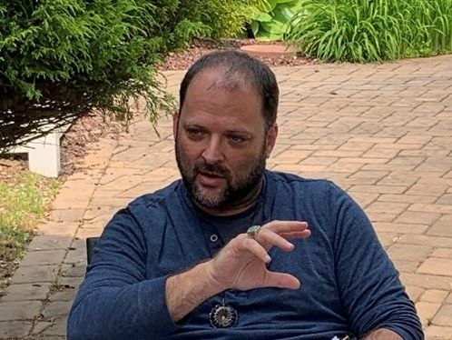

Filmanthropy by Design
New Jersey is the fastest-growing major film state in the country. We are here so that every production leaves its community more whole than it found it, and to build the proof that filmmaking itself can be an act of care.
“Filmanthropy is where the love of film and the love of humanity meet — everything a film, or the making of it, gives to the people and communities it touches: proceeds, materials, presence, or something permanent left behind.”
Film has always given back. Sometimes it is a finished film that moves an audience to act, or a director who turns a film's profits into a foundation. Sometimes it is the making itself: the sets, wardrobe, equipment, food, and props a production generates, and the presence of remarkable people doing remarkable work in communities seeing it up close for the first time. Today much of that material value goes to dumpsters or storage, and most of that human value goes uncoordinated.
Filmanthropy is the whole field that treats all of it as a gift a community can receive, rather than waste a production leaves behind. It is not one fixed thing, and it has a long history. What Social Effects is building is one particular practice within that field: Filmanthropy by Design — the discipline of planning the giving into the production itself, from the first day of pre-production, whatever form that care takes.
One form Filmanthropy by Design can take is production giving — what the making of a film shares with the community that hosted it. Most of the industry stops at the floor. The last twenty-five years have carried it higher, led by pioneers like EcoSet and Earth Angel, whose work the Ledger will honor in full.
Sustainable
Do less harm. Reduce, recycle, divert waste from the landfill. It lowers a production's footprint.
Contributive
A production actively gives back. Surplus is rehomed into the communities where filming happens — food, wardrobe, sets, equipment — and more than materials: the time, the access, the human presence a production uniquely carries. The giving has begun.
Regenerative
The production creates something permanent, for the community and for the world. Sometimes a place — the skatepark a Netflix production left standing in Rajasthan after Skater Girl. Sometimes a capability — a training pipeline or mentorship structure that outlives the shoot. It leaves something that was not there before. The ultimate civic gift.
This ladder is one road. A production can also give by design through its proceeds, a foundation, or a cause — the more traditional home of the word Filmanthropy, and it belongs here too.
For most of film's history, giving has been emergent — it arose from inspiration, from circumstance, from the conscience of the right person in the right moment. When it happened, it was often real and good. But it was not built to last, and it could not be counted on, because nothing was designed to make it happen.
Filmanthropy by Design is that design. The form is open: for some productions the gift is surplus rehomed and human presence offered to the community that hosted the shoot; for others, a share of proceeds, a foundation, or a cause committed to before a frame is shot. What makes it by Design is not what is given, but that the giving was planned in, and shaped with care, from the start.
It is the practice Social Effects is built on — the discipline that carries a production from a single act of generosity toward a regenerative result.
Social Effects did not coin the word Filmanthropy, and we say so plainly. It was introduced around 2008 and has been carried since by festivals, foundations, and filmmakers across the field. We honor all of it — and have built an expert practice within one part of it.
Read the fuller history →Filmanthropy by Design is not only about what a production leaves behind in bins and boxes. It's about what it leaves behind in people. That presence is itself a gift, if someone builds the infrastructure to offer it. We want to be that someone.
Workshops & Masterclasses
Cast and crew lead sessions for local students, community organizations, and nonprofits: from acting to cinematography to production design.
Set Visits & School Days
Behind-the-scenes access for high schools, community colleges, and youth programs. Real sets. Real crew. Real possibility.
PA Apprenticeships
Local teenagers and young adults spend a day as production assistants, the first rung of a career ladder most never knew existed in their own town.
Dream Visits
Coordinated through community partners, productions can offer Make-A-Wish style moments: meaningful encounters between cast, crew, and individuals for whom it changes everything.
Mentorship Introductions
Connecting film professionals with aspiring local creatives: one conversation, one relationship, that outlasts the production.
Community Screenings & Q&As
Nonprofits, shelters, schools, and community centers host exclusive screenings with cast and crew, before the world sees it.
Imagine a cast member sitting with women and children of a domestic violence shelter for an afternoon. Not a photo op — a conversation. That is the infrastructure we want to build: not just the wardrobe arriving at the shelter, but the human being walking through the door.
The Vision Behind The Human GiftFilmanthropy by Design — a practice in the making, open to productions now.
Filmanthropy by Design is delivered as four services. Each one is whole on its own; together they sequence naturally, and a production can take a single step or walk the full path. They are what Social Effects does today.
Most productions begin with Discovery — open to any production, at any budget, including those for whom giving back has not yet been a thought at all. A production already giving may begin with Story.
Discovery
a pre-production session
Discovery opens the question. In a working session with a film's key people — producer, director, talent — Social Effects brings the history of Filmanthropy, the research behind the Ledger, and real examples of what productions have given their host communities. The conversation turns to this film: what it cares about, what it could give across material, human presence, and proceeds. A production leaves with its own intention found, and the language to act on it. And because Discovery happens in pre-production, what surfaces can still shape the budget — giving designed in early costs far less than improvised at wrap.
For any production, at any budget. The front door.
Design
the written plan
Design turns intention into a document. Social Effects writes the production's Filmanthropy by Design plan: a concrete account of what the film will give and how, across whichever of the three streams it chooses — material surplus, human presence, a share of proceeds or a cause. The plan names recommended approaches and recommended recipients, each one researched and matched to the production. Because it is written down, it can be costed, shared, and built into the production's own plan, rather than living in one person's memory.
For productions ready to move from intention to plan.
Liaison
the giving, carried out
Liaison is where the plan becomes real. With the Design in hand, Bret personally carries it forward: reaching out to the recommended nonprofits and recipients, building the relationships by hand, and coordinating what can feasibly be done across whichever streams the production chose. A written plan is one thing; a plan that someone actually walks into the community, introduces, and sees through is another. Liaison is that someone — the bridge between a production's intention and the people on the receiving end of it, so the giving lands well and lands fully.
For productions that want the giving carried out, not just planned.
Story
told well, recorded honestly
A film's giving deserves to be told as well as the film itself. Story is the writing service: Social Effects writes the production's Filmanthropy — the pieces for its own social channels, the press narrative, the honest account of what was given and received, useful to the community, the production's reporting, and its press. The production is featured on the Social Effects site and channels as those launch, and through a developing relationship with an emerging New Jersey film publication aimed at covering Filmanthropic work. For a production already doing its giving, Story can be the first and only service it needs — the work made visible, and made to last.
For productions whose giving is real and deserves to be seen.
The four services above are for productions. This one is for the towns that host them. New Jersey now has more than fifty Film Ready communities — towns that have opened their doors to production. Most are focused on attracting films. Fewer have asked the next question: when a production comes, how does a town receive it well, so the community gains the most from its stay?
That is its own kind of design work, close to what Discovery and Design do for a production. Social Effects helps a Film Ready town shape how it welcomes, hosts, and benefits from the films it draws, building on the example of towns where local leadership has already begun to show what is possible.
Each service carries a fee. A production working with no budget can be gifted a service outright — Filmanthropy, applied to our own work.
Everything above is running now. What follows is where it leads — the operation Social Effects is being built to become, mapped across the same three streams, so a production can see the whole of the work, not only its first chapter.
Material
A production generates surplus across every department: set construction and lumber, wardrobe, food and craft services, equipment, props and set dressing, furniture, vehicles, flowers. The practice is built to route all of it — matched to recipients, with pickup, transfer, and intake coordinated — so that what now goes to a dumpster or a storage unit reaches the schools, shelters, pantries, and community organizations that can use it.
Human
The presence of cast and crew is itself a gift: workshops, set visits, apprenticeships, mentorships, screenings. The practice is built to coordinate it — matching what a production can offer to the organizations that would be changed by it — so a production can say yes without adding to its own workload.
Proceeds & Cause
The oldest form of Filmanthropy: a share of a film's proceeds, a foundation, a cause carried by the production. The practice is built to help a production design this early and structure it well, drawing on the lineage the Ledger documents.
The Process
Production Intake
Social Effects audits your surplus inventory in pre-production or at wrap. One call. No complexity on your end.
Match & Coordinate
We match each category, material and human, to recipient organizations across New Jersey.
Logistics & Transfer
We handle pickup, delivery, and intake coordination. Productions should not chase trucks. We do.
Documentation
Every item is tracked, every recipient confirmed, every workshop and visit logged alongside every pound of food and piece of wardrobe.
Filmanthropy Impact Report
Tax-ready, ESG-ready, PR-ready. We deliver your production's full community impact, material and human, quantified and clearly documented.
And, On the Horizon — Two Standing Networks
Sustainable Vendor Directory
A vetted directory of NJ caterers, materials suppliers, local artisans, and NJ-based vendors. Productions find them; we make the connection.
Recipient Network Membership
Nonprofits, schools, shelters, food banks, theaters, and community organizations join a growing network of partners. Productions find you; we coordinate intake.
New Jersey's Take Two program, administered by the NJMPTVC, is already doing real work. The state has the right framework: a curated list of nonprofit recipients handed to every production's sustainability officer at intake. Productions across NJ can donate surplus through it. And in towns where local leaders take it on personally, the work is happening: wardrobe headed to women's shelters, food to local pantries, a genuine proof of concept already in the field.
Standing on the shoulders of pioneers like EcoSet and Earth Angel, Social Effects is the coordinating layer that can turn that proof of concept into a standard. Dedicated coordination, documented nonprofit pipelines, pre-production planning, measured impact, so that what now happens by hand in pockets of New Jersey becomes something systematic, celebrated, and available to every Film Ready community in the state.
New Jersey was central to the birth of American cinema. For 130 years it watched the industry it helped create flourish elsewhere. The boom returning to this state is an extraordinary economic story. It is also an extraordinary chance to ask a question no film state has yet fully embraced: what becomes possible when a production is designed to give back? New Jersey, with its community spirit, its municipalities, and this rare moment, is exactly the place to find out. Read The Filmanthropy Ledger →
Selznick Studio · Fort Lee, New Jersey · c. 1920
The work of Filmanthropy is fundamentally relational. Trust gets built in person, over time, through accountability: between productions and the communities they film in, between nonprofits and the families they serve, between mayors and the neighbors they protect.
We bring the best of modern AI and technology to every layer of what we do: matching, logistics, documentation, impact reporting, network management. Not to replace the human element but to amplify it, so that one dedicated team can coordinate at the scale this moment in New Jersey demands.
There is a deeper reason this balance matters now. As technology makes the moving image easier and cheaper to generate, the value of filmmaking moves toward the things that cannot be simulated: a production that actually happened, in a real place, employing real people, leaving real things behind. A film made this way is not only a story on a screen. It is a civic act, an economic event, and a piece of infrastructure for the town that hosted it. That is the part of filmmaking with a lasting future, and it is the part Filmanthropy by Design is built to protect and expand.
Warm relationships. Cutting-edge tools. A clear sense of what each is for. That is the combination we are building.
Read more: Why filmmaking’s future is human and civic →Social Effects is a hybrid for-profit company with a simple conviction: that the way we make things can be an act of care, not only an act of production, and that film is where we will prove it.
We build the practice of Filmanthropy by Design, giving planned into the filmmaking process from the first day of pre-production, in materials and in human presence, rising to Regenerative Filmmaking, where a production builds something permanent that a community keeps. We operate as a full-service company so we can meet every production where it is, fund the work, and move the industry. We coordinate the giving, document it, and make it repeatable, so that what has always depended on the right person asking becomes how things are simply done.
We are a business built to fund what we believe in. Our profits are directed toward the healing we think matters most, beginning with mental health reformation, and toward the Moonshot: the first fully Regenerative feature film, a production whose making leaves lasting infrastructure, and lasting good, behind it. We are starting in New Jersey, at the moment the industry returns to the state where American film began, because every paradigm needs a first place to become real.
A semi-fictionalized, transmedium production about mental health reformation and the civil rights moviement for the soul; the courage and the people who dared to imagine something different, made so that what gets built to tell the story keeps serving the community long after the cameras leave.
But more than any of it: the networks, the relationships, the economic systems activated to make the film become permanent infrastructure for mental health and community resilience in New Jersey. This is the difference between sustainable and regenerative: one leaves less behind. The other leaves something that wasn't there before. ( See Skater Girl)
A production like this can be financed many ways. A large budget can simply build it; a smaller one can stack its own funds with arts grants, economic development money, philanthropy, and corporate partners. The Moonshot is a question of intention, not of scale.
Every engagement is designed to fund this vision and our commitment to the Mental Health Reformation Consortium.
Whether you're a production company, a municipality, a nonprofit, a school, or a NJ vendor who wants to be part of what's coming, we want to hear from you.
Curious about the history of Filmanthropy: what's been done, what's been missed, and what's possible now? Read The Filmanthropy Ledger →

Bret Warshawsky
Founder & Chief Filmanthropist
Social Effects is a Central New Jersey startup in active formation. We are building our founding partner team, welcoming first-mover productions and community collaborators, and exploring seed investment. If you want in early, now is the moment.